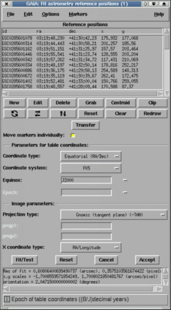
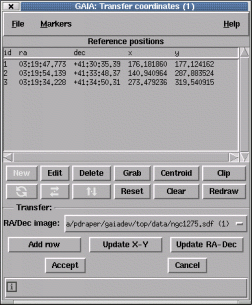

This window is designed for fitting an astrometric calibration to your image. To use it you need to go through several stages:
You can get reference position information from many sources (consulting your co-workers about how they get such information is often a good start), but the most easily available in GAIA is from the Guide Star Catalogue (GSC) and US Naval Catalogue (USNO) which you can query using the "Catalogues..." item under the "Data-Servers" menu on the main window.
Reference positions can also be copied from DSS or other pre-calibrated images.
Press the "Transfer" button. This will create a new dialog window in which you can pick an object in the DSS image and then pick the same object in the current image. Do this until you've got a reasonable set, accept the positions and this will update the reference positions used in this window. Press the "Fit/Test" button and you'll have an approximate calibration.

Help with using the transfer toolbox is available:
After you've made a query to a catalogue for some reference positions, you can copy these to this window using the "Grab" button. This creates a dialog window from which you need to select the catalogue you're interested in.
Note: to successfully overlay reference positions, your image will need an approximate calibration. Do this using the method outlined above for DSS images, or use the "Type in known calibration" toolbox.
All the reference positions are listed in rows the reference table. To modify one of these values you either:
To do this just press the "New" button and fill in the dialog window. Remember to give a valid "id" (which can be any unique string or number) and press "Enter" to create the new object. You can enter more than one object at a time by editing new values and pressing "Enter" again.
Either select the row in the reference table and press the "Delete" button, or press <Control-Mouse-Button-1> over the marker. Note you can delete many rows at a time by selecting all their entries in the reference table.
Each reference position is associated with a graphics marker that is displayed over the image (the default is a small circle). The position of this marker identifies the point on the image that corresponds to the correct position on the sky.
You do this by:
If you want to move all the markers as if they are coupled together (so that for instance they all move by the same amount, or rotate/scale about the same point). Then open the "Options" menu and select the "Move markers individually" item to switch this option off. Now when you move one marker they will all move together. You'll also notice a cross marker appearing on the image, this identifies the rotation/scale centre and can be moved just like any other marker. To rotate or scale all markers, press mouse button 2 over one and drag the marker to its new position.
Just place your cursor over the marker you're interested in and the appropriate row in the reference table will be highlighted. Double clicking the marker also shows the values associated with the object.
Pressing mouse button 2 over a selected row in the table attempts to centre the image about the associated marker.
If your reference positions are all stars (or non-confused peaked objects), then you can accurately position the markers by centroiding. Just press the "Centroid" button.
After you've got sufficient reference positions created and you've positioned their graphics markers to your satisfaction, you can attempt a fit by pressing the "Test" button. The results of the fit are displayed in a scrollable window just below the "Test" button.
After doing a fit you can assess it visually by checking the new marker positions, which are updated. You can also read off positions using the main window facilities, check the axes orientations using a grid overlay (see "Overlay axes grid..." under "Image-Analysis") and replot any catalogues positions from query windows.
When you're happy with the quality of your calibration press the "Accept" button to close the window. This updates the image with the new astrometric system, but to retain this information you need to save the image to disk (see the "Save as..." item in the "File" menu).
Open the "Graphics" menu. Under this are many options for setting the size, shape and colour of the markers.
You can do this by closing the window, or by using the "Clear" item under the "Graphics" menu.
Open the "Graphics" menu and select the "Redraw" item.
Press the "Clip" button.
You can write a plain text file copy of the reference positions using the "Write positions to a file..." item in the "File" menu. These can be read back later using the "Read positions from a file...".
You can read in reference positions from plain text files using the "Read positions from a file..." item in the "File" menu. The format of these files should be either:
The fields in this section define the type and system of your reference coordinates. Usually these will be "Equatorial" (i.e. right ascension and declination), in the FK5 system and have an equinox of J2000. However, they could potentially also be in the FK4 system, in which case the usual equinox is B1950 with epoch also of 1950. You'll need to check the source of your reference positions to find out this information. Most standard catalogue positions (and certainly those which are used on-line by GAIA) are in FK5/J2000 coordinates.
If you are dealing with images which have been taken on optical telescopes (not Schmidt) then you can probably leave the "Projection type:" field in its default value (radio astronomers and others with unusual configurations will need to worry more about this field).
The "X coordinate type" field is used to say which image axes are most like the corresponding "ra" and "dec" columns (you would select "X coordinate type:" as Dec if your image had Declination running along the X axis). If this occasionally necessary when fitting rotated images and using fit options other than the one that allows shearing terms.
To learn more about projections and the different types of celestial coordinate systems have a look at the various FITS documents available, such as "Representations of celestial coordinate in FITS", by Eric W. Greisen and Mark Calabretta (http://www.cv.nrao.edu/fits/documents/wcs/wcs.html).